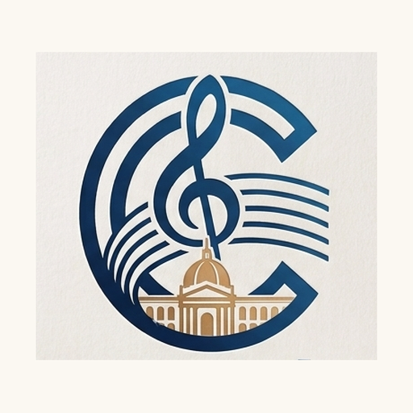

Busca por instrumento, zona y precio entre profesores egresados y estudiantes de la Universidad Nacional de Música. Pagas dentro de la app — nunca antes de que tu clase esté confirmada.
💳 Pagas exactamente la tarifa que ves en el perfil del profesor — sin comisiones ni cargos ocultos para ti.
Cuatro pasos, sin necesidad de crear cuenta hasta que de verdad quieras reservar.
Filtra por instrumento, zona y tarifa. Ves experiencia, formación y si el profesor está verificado como egresado o alumno de la UNM.
Cada profesor publica sus horarios reales. Envías tu solicitud para el día y hora que te sirva.
Recién cuando el profesor acepta tu horario, pagas por Yape o Plin a la cuenta oficial de Compás — no al profesor directamente.
Con el pago confirmado se desbloquea un chat directo con tu profesor para afinar dirección, link de videollamada o cualquier detalle.
Piano, cuerdas, vientos, percusión, canto y más — con profesores reales del ecosistema de la UNM.
Cuatro reglas que no se negocian, pensadas para que entregar tu plata o la de tu hijo a un desconocido deje de dar miedo.
El pago nunca va directo al profesor. Va a la cuenta oficial de Compás, y un administrador confirma que todo esté en orden antes de liberar el contacto.
Cada profesor pasa por una revisión manual antes de aparecer en Explorar — y puede llevar un sello de 🥇 Egresado UNM o 🎓 Alumno UNM si verificó su carné o constancia.
Tu dirección exacta recién se comparte cuando el pago ya está confirmado — antes, el profesor solo ve tu distrito general.
Toda coordinación queda registrada en el chat interno de la app, nunca por WhatsApp personal — así hay historial claro si algo necesita revisarse.
El profesor va a tu casa. La movilidad, si aplica según tu zona, se muestra clara desde antes de reservar.
Vas tú al espacio del profesor.
Clase por videollamada, en el día y hora que acuerden.
Una duda puntual, una sesión corta — sin comprometerte a un paquete completo.
Algunos profesores se marcan disponibles ahora mismo, para una clase urgente en las próximas horas.
Lo que la mayoría pregunta antes de reservar su primera clase.
Sí. Pagas exactamente la tarifa por hora que el profesor publicó, más la movilidad si pidió clase a domicilio fuera de su zona (se muestra clara antes de confirmar). Compás no te cobra ninguna comisión aparte.
Por Yape o Plin, a la cuenta oficial de Compás que te muestra la app al momento de reservar. Subes tu captura de pago y, una vez confirmada, se desbloquea el chat con tu profesor.
Antes de pagar, cancelas tú mismo sin necesidad de avisar a nadie. Si ya pagaste, solicitas la cancelación desde la app y el administrador la revisa.
Egresados y estudiantes de últimos ciclos de la Universidad Nacional de Música. Cada perfil pasa por aprobación manual antes de publicarse, y puede verificar su carné o constancia para llevar el sello correspondiente.
No. Compás es una iniciativa privada e independiente que conecta a alumnos, egresados y docentes de la UNM con quienes buscan clases — la universidad no participa ni se responsabiliza por el servicio.
Sí, tu calificación queda visible en su perfil y ayuda a que otros alumnos elijan con más información.
Sí, puedes reservar un paquete de varias clases en el mismo horario semanal, en vez de pedir cita por cita.
Puede ofrecerla a otro profesor del gremio como suplencia, sin compartir tu nombre ni tu dirección hasta que alguien la tome y coordine directo contigo.
¿Tienes un problema o alguna duda antes de reservar? Escríbenos directo.
Horario de atención: lunes a sábado, 9:00am a 4:00pm. Fuera de este horario, las respuestas pueden demorar un poco más.
Explora perfiles gratis, sin crear cuenta — regístrate recién cuando quieras reservar.
Buscar mi profesor →